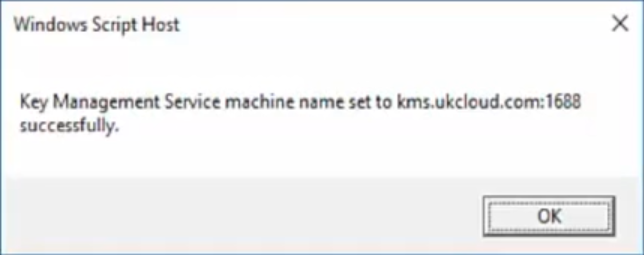
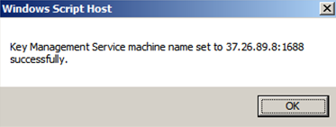
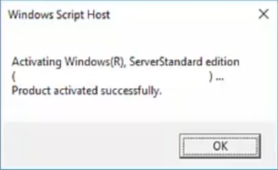

How to license Windows VMs using the UKCloud Key Management Server
Overview
You need to register the Windows virtual machines (VMs) that you create with the UKCloud Key Management Server (KMS). You need to set up a connection with the KMS to enable registration.
Setting up a connection with the UKCloud KMS
Before product activation, make sure your VMs can communicate with the UKCloud KMS that exists outside your cloud organisation.
To allow this communication, you need to create a source network address translation (SNAT) and firewall rule on your edge gateway:
In vCloud Director, click the Administration tab.

For more detailed instructions, see the Getting Started Guide for UKCloud for VMware
Double-click the virtual data centre (VDC) that you want to work with, or right-click the VDC and select Open.
Select the Edge Gateways tab.

Right-click the edge gateway and select Edge Gateway Services.
Select the NAT tab and click Add SNAT

Make sure that the Applied On field is set to reflect your network.
For the Original (Internal) source IP/range, enter the IP address, CIDR or range of addresses you want to SNAT out.
For the translated address, enter the external IP address of your edge gateway or one of your external IP address assignments.
Select the Firewall tab and make sure that an outbound rule exists on your firewall.
- For Assured: Set the Destination IP to
37.26.89.8and the Destination Port toanyor1688 - For Elevated: Set the Destination IP to
172.26.x.x(contact support for IP) and the Destination Port toanyor1688
- For Assured: Set the Destination IP to
Activating your Windows licence
Open a console to the VM you want to license and activate.
Launch a command line with administrator rights.
Enter:
C:\ > slmgr /skms kms.ukcloud.com:1688You'll see the following pop-up box:

If an error message appears indicating that the KMS server can't be contacted, it means either that the edge gateway hasn't been configured correctly or that DNS can't be retrieved. Try again by issuing the same command but using the IP address of the activation server:
C:\ > slmgr /skms <external IP address>:1688
Click OK, then from the same command line window, enter:
C:\ >slmgr /ato
Feedback
If you have any comments on this document or any other aspect of your UKCloud experience, send them to products@ukcloud.com.